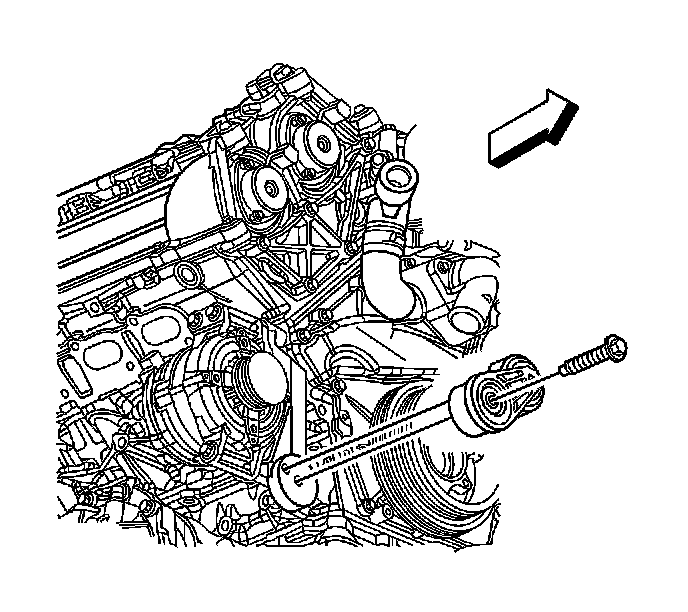

Drive Belt Tensioner Replacement - Generator
Drive Belt Tensioner Replacement - Generator
Removal Procedure
1. Remove the air conditioning, power steering, and water pump drive belt. Refer to Water Pump and Air Conditioning Compressor and Power Steering Pump Belt Replacement (Water Pump and Air Conditioning Compressor and Power Steering Pump Belt Replacement) .
2. Remove the generator drive belt. Refer to Generator Drive Belt Replacement (Generator Drive Belt Replacement) .

3. Loosen the generator drive belt tensioner bolt.
4. Remove the drive belt tensioner and bolt from the engine.
Installation Procedure
1. Position the generator drive belt tensioner and bolt to the engine as an assembly.
2. Ensure that the alignment pin on the rear of the tensioner assembly is aligned with the locating hole on the engine.
Notice: Refer to Fastener Notice (Fastener Notice) .
3. Install the drive belt tensioner bolt.
Tighten the drive belt tensioner bolt to 50 N.m (37 lb ft).
4. Install the generator drive belt. Refer to Generator Drive Belt Replacement (Generator Drive Belt Replacement) .
5. Install the air conditioning, power steering, and water pump drive belt. Refer to Water Pump and Air Conditioning Compressor and Power Steering Pump Belt Replacement (Water Pump and Air Conditioning Compressor and Power Steering Pump Belt Replacement) .